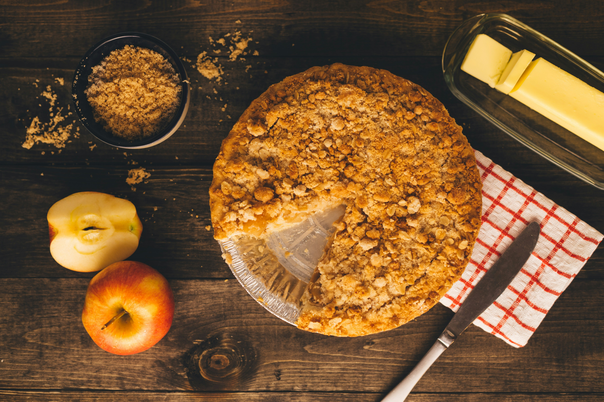

HOME
Apple Pie

Description
An apple pie is a fruit pie in which the principal filling is apples. It is generally has shortcrust pastry both above and below the filling.
Ingredients
- Apples: This recipe calls for eight small Granny Smith apples.
- Apples: This recipe calls for eight small Granny Smith apples.
- Sugars: A blend of white and brown sugar creates the perfect sweet flavor with a hint of warmth.
- Pie crust: Use a store-bought double crust pie pastry or make your own at home.
Steps
- Slice apples evenly: Thin, uniform slices help the pie bake evenly and prevent crunchy spots.
- Start hot, then reduce the heat: The high initial temperature helps set the crust, while the lower temperature finishes cooking the apples until tender.
- Protect the crust if needed: If the edges brown too quickly, loosely cover them with foil during the final bake time.
- Let the pie rest. For best results, allow the pie to cool for at least 2 hours before slicing so the filling can set properly.